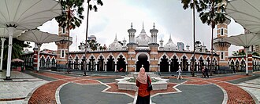

Общие сведения
Masjid Jamek en français : « Mosquée Jamek », situé à Kuala Lumpur, est la plus ancienne mosquée de la capitale de la Malaisie.
المسجد الجامع بني المسجد في عام 1909، يعد المسجد الجامع واحد من أقدم المساجد في كوالالمبور عاصمة ماليزيا، يقع المسجد عند التقاء نهر كلانغ ونهر غمباك، تم تصميم المسجد من قبل آرثر بينيسون هوباك.
Jamek Mosque, officially Sultan Abdul Samad Jamek Mosque is one of the oldest mosques in Kuala Lumpur, Malaysia. It is located at the confluence of the Klang and Gombak rivers and may be accessed via Jalan Tun Perak. The mosque was designed by British architect and soldier Arthur Benison Hubback, and built in 1909. It was the principal mosque of Kuala Lumpur until the construction of the national mosque Masjid Negara in 1965.
Jamek Mescidi, Malezya'nın başkenti Kuala Lumpur'da 1909'da inşa edilen büyük cami.
Masjid Sultan Abdul Samad, secara resmi bernama Masjid Jami Sultan Abdul Samad atau lebih dikenal dengan Masjid Jamek adalah sebuah masjid bersejarah yang berada di kota Kuala Lumpur, Provinsi Kuala Lumpur, Malaysia. Masjid ini terletak di pertemuan arus Sungai Kelang dan Sungai Gombak dan dapat diakses melalui Jalan Tun Perak. Masjid ini dibangun pada tahun 1909 dan diarsitekturi oleh Arthur Benison Hubback.
جامع مسجد کوالا لمپور رسمی طور پر سلطان عبد الصمد جامع مسجد (مالے: Masjid Jamek Sultan Abdul Samad، جاوی: مسجد جامع سلطان عبد الصمد) کوالا لمپور، ملائیشیا کی قدیم ترین مساجح میں سے ایک ہے۔ یہ دریائے کلانگ اور دریائے گومباک کے سنگم پر واقع ہے۔
Masjid Jamek es una de las más antiguas mezquitas de Kuala Lumpur (Malasia), localizada en la confluencia de los ríos Klang y Gombak, y fue diseñada por Arthur Benison Hubback.
占美清真寺 也译占美回教堂、嘉美回教堂等，是馬來西亞首都吉隆坡历史最悠久的清真寺。其坐落于敦霹雳路旁，同时也位于巴生河和鹅唛河的交汇处。在英治時期由公共事務調查局助理建築師亞瑟‧班尼生‧胡貝克設計，1909年落成啟用。在阿拉伯文中，“占美”（Jamek）的意思是穆斯林聚集以进行膜拜的地方。当地居民也将其称为“周五清真寺”
スルタン・アブドゥル・サマド・ジャメ・モスク は、マレーシアのクアラルンプールにある最も古いモスクのひとつである。クラン川とゴンパック川の合流地点にあり、ジャラン・トゥン・ペラ（トゥン・ペラ通り）からアクセスすることができる。モスクはアーサー・ベニソン・ハバックによって設計され、1909年に建造された。
자멕 이슬람 사원(말레이어: Masjid Jamek, 자위 문자: مسجد جامع كوالا لومڤور)은 1909년에 세워진 말레이시아의 모스크이다. 우아한 자태를 자랑하는 가장 오래된 쿠알라룸푸르의 이슬람 사원이며, 유연한 곡선미와 돔 등 이슬람 문화의 특징을 발산하고 있는 건물이다.
Масджид-Джаме — самая старая мечеть в Куала-Лумпуре. Построена по проекту английского архитектора Артура Хаббака в 1909 г. у места слияния рек Кланг и Гомбак, где было создано первое поселение будущей столицы. Изящное сооружение в мавританском стиле с преобладанием красно-белых тонов, с многочисленными башенками, двумя минаретами и тремя куполами, утопающими среди кокосовых пальм. Зал для молитв одной стороной открыт во внутренний дворик, где находится мавзолей с могилами видных деятелей.
มัสยิดจาเม็ก หรือชื่อทางการว่า มัสยิดสุลต่านอับดุล ซามัด จาเม็ก เป็นหนึ่งในมัสยิดที่เก่าแก่ที่สุดในกรุงกัวลาลัมเปอร์ ประเทศมาเลเซีย มัสยิดนี้ได้รับการออกแบบโดยอาร์เทอร์ เบนิสัน ฮับแบ็ก และสร้างใน ค.ศ. 1909 โดยสร้างใกล้กับแม่น้ำกลังและแม่น้ำกมบัก
Masjid Jamek (Jamek-moskén) är en av de äldsta moskéerna i Kuala Lumpur, Malaysia. Den är belägen vid sammanflödet av floderna Klang och Gombak och ritad av Arthur Benison Hubback. Den öppnades officiellt år 1909.
На карте
Документы и ссылки
- Wikipédia — Français
- Wikipédia — العربية
- Wikipédia — English
- Wikipédia — Türkçe
- Wikipédia — Bahasa Indonesia
- Wikipédia — اردو
- Wikipédia — Español
- Wikipédia — 中文
- Wikipédia — 日本語
- Wikipédia — 한국어
- Wikipédia — Русский
- Wikipédia — ไทย
- Wikipédia — Svenska
- Wikidata — Q1143296
Данные: Викиданные (CC0), обновляются каждые 3 месяца. Год — самая ранняя известная дата постройки здания: для здания, ставшего мечетью позже (как Айя-София), это год постройки исходного здания. Фото: Викисклад, автор и лицензия — на странице каждой фотографии.